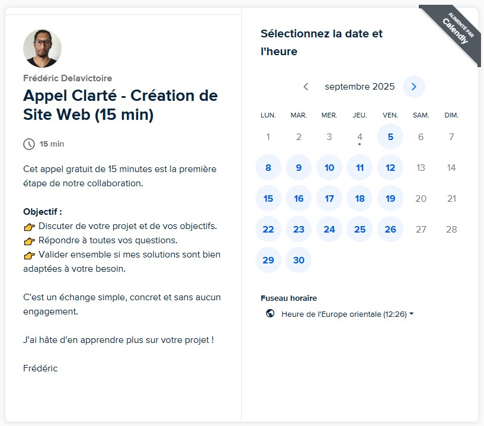

L'Objectif Stratégique : Votre Assistant Personnel qui Inspire Confiance
24/7
Imaginez ne plus jamais avoir à échanger 5 emails pour trouver un créneau commun. Imaginez
que vos clients puissent réserver leur appel découverte en toute autonomie et
en se sentant guidés, même à 2 heures du matin. C'est la promesse de cette section.
Nous allons intégrer un outil qui transforme votre site en un assistant personnel
intelligent. Son but est d'éliminer toute friction et toute appréhension entre l'intérêt
d'un visiteur et la planification d'un échange. C'est un gain de temps massif pour vous, et
une expérience incroyablement fluide et professionnelle pour vos clients.
À quoi ressemble un module de réservation intégré ?
Votre visiteur peut
choisir un jour, puis un créneau horaire disponible, et enfin remplir ses informations pour
confirmer. Le tout, sans jamais quitter votre site, dans une interface claire et rassurante.

Étape 1 : Le Titre et l'Introduction (L'Invitation Finale)
C'est la toute dernière invitation que vous adressez à votre
visiteur. Le texte qui introduit votre module de réservation doit être plus qu'un simple
titre ; il doit être un dernier murmure d'encouragement, une phrase qui transforme
l'hésitation finale en une action confiante.
✍️ Atelier de Brainstorming Guidé : Votre Invitation Finale
Partie A : La Réflexion Stratégique - Parler du Bénéfice, pas de
l'Action
L'objectif est de formuler une invitation qui se concentre sur le bénéfice
pour le client, et non sur l'action technique de "réserver".
❌Piège à éviter : Les titres froids, transactionnels
ou directifs.
Ces titres sont fonctionnels, mais ils manquent de chaleur et peuvent sembler un
peu brusques après un parcours de site tout en douceur.
- "Réservez" ou "Prendre RDV" : Trop direct, sonne comme un
ordre.
- "Mon Agenda" : Informatif, mais froid et centré sur vous, pas sur
le client.
- "Planifier une consultation" : Jargon un peu trop formel et
corporate.
✅Ce qui fonctionne : Les titres qui rappellent la
promesse et la bienveillance.
Les meilleures invitations se concentrent sur l'expérience du client. On ne parle
plus d'une transaction, mais d'une transformation qui commence.
Partie B : Inspiration - Trouvez Votre Style
Voici quelques styles pour vous inspirer. Lequel résonne le plus avec votre énergie
et la manière dont vous souhaitez accueillir vos futurs clients ?
- ✦
Style Chaleureux & Accueillant :
Met l'accent sur la conversation et l'échange.
Exemples : "Prêt(e) à échanger ?", "Parlons de votre projet".
- ✦
Style Direct & Rassurant :
Idéal pour être clair et efficace tout en restant humain. Met l'accent
sur la simplicité du processus.
Exemples : "Réservez votre appel en toute simplicité",
"Planifions notre rencontre".
- ✦
Style Centré sur l'Engagement :
Parfait pour les accompagnements transformateurs. Met l'accent
sur le premier pas et la décision du client.
Exemples : "Faire le premier pas", "Commençons votre chemin vers
la clarté".
Le sous-titre vient ensuite donner le
mode d'emploi de manière douce : "Choisissez simplement le créneau qui vous
convient dans l'agenda ci-dessous. C'est gratuit, confidentiel et sans engagement."
Étape 2 : L'Outil - Calendly, Votre Meilleur Allié
Pour gérer les prises de rendez-vous, nous utilisons un outil
externe spécialisé, leader sur le marché : Calendly. Il est conçu pour être simple, élégant
et incroyablement puissant.
✅ Les Bénéfices de Calendly pour Votre Pratique :
- Gain de Temps Immense : Fini les allers-retours d'emails.
L'organisation est 100% automatisée.
- Paiement en Ligne (Optionnel) : Pour vos séances payantes, vous pouvez demander un acompte ou le paiement
complet via Stripe ou Paypal au moment de la réservation. C'est
la meilleure façon de réduire les rendez-vous manqués !
- Zéro Double Réservation : Calendly se synchronise à votre agenda
(Google, Outlook...). Si vous avez un rendez-vous personnel, le créneau devient
indisponible.
- Professionnalisme : Le système envoie des confirmations et des
rappels automatiques par email à vous et à votre client.
Étape 3 : L'Art de Concevoir une Expérience de Réservation Parfaite
Dans Calendly, une offre de rendez-vous s'appelle un "Type
d'Événement". La manière dont vous le nommez et le décrivez est cruciale. C'est la dernière
micro-expérience avant que votre client ne s'engage.
❌Piège à éviter : L'approche froide et administrative.
Des noms vagues ou techniques et des descriptions inexistantes peuvent créer une dernière
hésitation. Le client se demande "Est-ce bien ça que je dois choisir ?".
- Nom : "Entretien" ou "Rdv 30min". (Manque de chaleur et de
précision)
- Description : Aucune, ou simplement "Appel de 30 minutes". (Ne
rassure pas, n'apporte aucune valeur)
- Questions : Aucune. (Vous manquez une occasion de préparer la
séance et de montrer votre attention)
✅Ce qui fonctionne : L'approche "Guide Bienveillant".
Chaque détail est pensé pour rassurer et clarifier. L'expérience est fluide et humaine.
- Nom : "Appel Découverte Offert (30 min)". (Clair, spécifique, inclut la durée et la gratuité)
- Description : "Cet échange confidentiel est l'occasion de faire connaissance, de m'exposer votre situation et de voir si le courant passe entre nous. C'est le moment idéal pour poser toutes vos questions avant de vous engager." (Rassure, donne le cadre, gère les attentes)
- Questions (1 ou 2 max) : "Quel est votre objectif principal en faisant appel à un coach ?" ou "Comment avez-vous entendu parler de moi ?". (Montre que
vous vous intéressez, vous aide à préparer)
Étape 4 : Atelier de Configuration de Votre Appel Découverte
En vous inspirant des bonnes pratiques, définissons ensemble les
détails de l'appel découverte que vous souhaitez proposer à la réservation en ligne.
Étape 5 : La Mise en Place Pratique
Mon rôle est d'intégrer parfaitement cet outil dans votre site.
Votre rôle est d'être le propriétaire de votre compte Calendly. Je vous accompagnerai pas à
pas pour la création et la configuration de base de votre compte.
Si vous n'en avez pas, pas d'inquiétude, nous le créerons ensemble !
Étape 6 : La Synthèse - Votre Fiche Récapitulative
| Titre de la Section |
|
| Sous-titre de la Section |
|
| Nom de l'Événement Principal |
|
| Durée de l'Événement |
|
| Description de l'Événement |
|
| Questions pour le Participant |
|